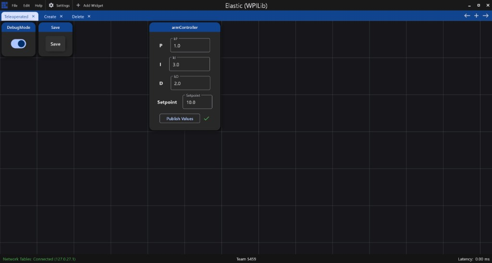

Elastic layout file
This repo ships an example Elastic layout with Teleoperated, Create, and Delete tabs. Import it, keep it next to your config as the promote watch file, and re-open it after structure changes.
What example-layout.json contains
-
Teleoperated — Toggle Switch on
/Config/DebugMode, Toggle Button on/Config/Save. -
Create — List layout with Folder chooser, Type chooser, Name text, Go
button (
/Config/Create/...). -
Delete — Path chooser and Go (
/Config/Delete/...).
Source file in the repo:
src/main/deploy/example-layout.json. Copy or rename to
elastic-layout.json in deploy if you want the default
ConfigManager watch path (sibling of robot-config.json).
Import / update in Elastic
- Open Elastic and import the JSON layout (or open the saved layout file).
- Confirm topics match the table in the using guide.
-
After Create/Delete on the robot, or after editing the layout file on disk,
re-import or reopen the layout. Elastic does not auto-reload
elastic-layout.json.

Promote via layout Save As
In debug, when the watched layout file’s content changes (for example Elastic Save
As overwriting elastic-layout.json on the deploy path the robot watches), the
library can promote the live document into robot-config.json — same idea as
pressing Save. Prefer the Save button when you only want to promote values, not change the
dashboard layout.
Next: Troubleshooting · Create and delete